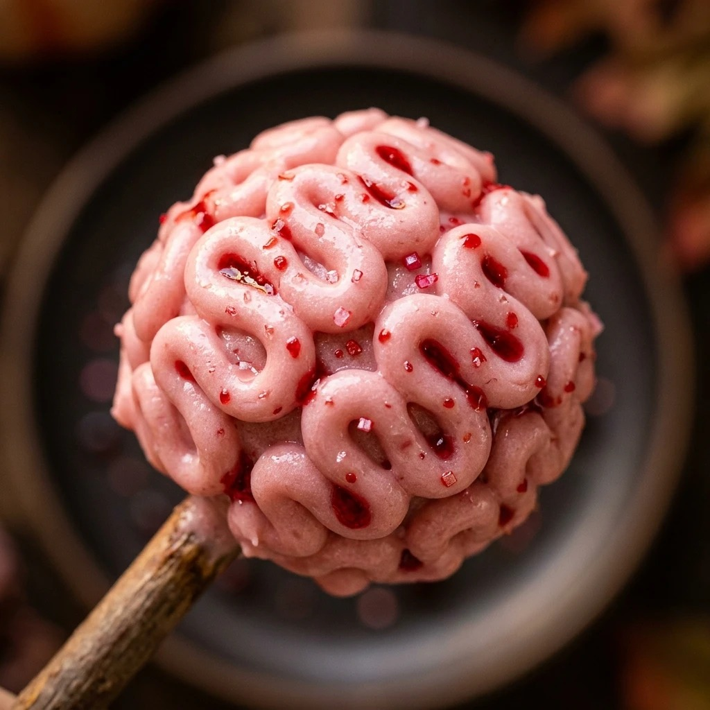

Halloween Zombie Brain Cake Pops Recipe
October 17, 2026

Halloween is the perfect time to get creative in the kitchen with treats that look spooky but taste amazing. These Halloween Zombie Brain Cake Pops are the ultimate showstopper for any costume party or spooky gathering. With their realistic “brain” texture and gooey red interior, they are sure to delight both kids and adults alike.
Recipe Information
Prep Time: 45 minutes
Cook Time: 30 minutes
Total Time: 75 minutes
Servings: 24 cake pops
Difficulty Level: Medium
Nutrition Information
Calories per serving: 210 kcal
Protein: 2g
Carbohydrates: 28g
Fat: 10g
Fiber: 1g
Sugar: 22g
Sodium: 180mg